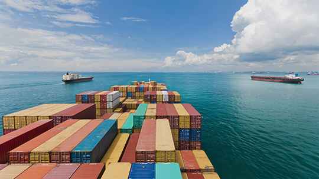

GABON
Afin de mieux comprendre la réussité du Gabon incarné par son PIB par habitant , nous étudierons ce pays sur 3 plans: géographique, démographique et économique
Afin de mieux comprendre la réussité du Gabon incarné par son PIB par habitant , nous étudierons ce pays sur 3 plans: géographique, démographique et économique
Le Gabon est un pays d’Afrique centrale, baigné par l'Atlantique, au sud du golfe du Biafra, dans le golfe de Guinée. Situé à hauteur de l’équateur, le climat y est tropical chaud et humide.Le relief du Gabon est constitué d’une plaine côtière basse, de collines à l’intérieur du pays et de savanes à l’est et au sud. Selon les estimations, 80 à 85 % du pays est recouvert par la forêt. Son sous-sol est riche en minéraux et en pétrole. Le climat est de type équatorial, chaud et humide. Cela signifie que les températures varient peu au long de l'année et qu'il faut compter avec une alternance de saisons sèches et de saisons des pluies ; en saison, les précipitations sont considérables et constituent le facteur climatique déterminant pour les activités humaines (agriculture et transports notamment). On distingue une grande saison des pluies (février-mai) et une petite saison des pluies (septembre-décembre) ainsi qu'une grande saison sèche (mai-septembre) et une petite saison sèche (décembre-janvier).
La plaine littorale, large de 20 à 300 kilomètres, se situe à l'ouest, le long de l'océan Atlantique ; elle est parsemée de mangroves représentatives de l'écorégion des mangroves d'Afrique Centrale. Le plus grand fleuve du pays, l'Ogooué, forme, à hauteur de Lambaréné, un delta intérieur délimitant une zone de lacs ; au-delà, l'embouchure du fleuve correspond à un delta maritime de très grande taille, marécageux et difficile d'accès, entourant la presqu'île sur laquelle se situe Port-Gentil. Au nord, cette plaine littorale est parsemée de rias. La côte est un bassin sédimentaire côtier, constitué d'accumulations de sable et de vase, presque dépourvue de côte rocheuse et de falaise pour toute l a partie au sud de Libreville. Il existe un court littoral rocheux, au nord de Libreville, du cap Estériasc jusqu'à la frontière équatoguinéenne. Les plaines intérieures sont celles de la Nyanga (en amont et aval de chibanga), et de la Ngounié (amont et aval de Mouila), au sud-ouest du pays. De nature karstique, ces plaines sont peu fournies en cours d'eau. Au sud et au centre se trouvent les massifs du Mayombe et du Chaillu, les plus importants du pays. Quoique de faible altitude, i ls s'élèvent abruptement au-dessus des bas-plateaux et des collines qu'ils dominent, formant des escarpements de plusieurs centaines de mètres. es collines et plateaux couvrent l'essentiel de la surface du pays ; le massif le plus important se trouve au nord-est dans les provinces du Woleu-Ntem et d'Ogooué-Ivindo
Couvert à plus de 80 % par la forêt, le Gabon possède le plus fort taux de superficie forestière par habitant en Afrique ce qui permet d'entretenir une faune et une flore remarquables. Un grand nombre d'espèces animales et végétales sont protégées La biodiversité gabonaise est sans doute l'une des plus élevées de la planète avec « 700 espèces d’oiseaux, 98 espèces d’amphibiens, entre 95 et 160 espèces de reptiles, près de 10 000 espèces de plantes, plus de 400 essences forestières et 198 espèces différentes de mammifères.» On y trouve de nombreuses espèces animales rares (le Pangolin du Gabon, le Picatharte…) ou endémiques ( Cercopithèque à queue dorée…) Le pays est une des réserves de faune les plus variées et les plus importantes d’Afrique : c'est un important refuge pour les Chimpanzés (dont le nombre est estimé, en , entre 27 000 et 64 000) et les Gorilles (35 000 recensés en ). La « Station d'études des gorilles et chimpanzés» à l'intérieur du Parc national de la Lopé, se consacre à leur étude. Il abrite aussi plus de la moitié de la population des éléphants de forêt d'Afrique avec 22 000 individus () dans le Parc national de Minkébé.
Libreville compte un peu moins d’un million d’habitants. Le pays est très urbanisé en comparaison de ses voisins, avec un taux d’urbanisation à 87,1 % (recensement ). Le Gabon a des ressources abondantes, des richesses naturelles, et surtout de l’espace, avec moins de 7 habitants au kms2. Mais l’exploitation de ces richesses a surtout été le fait des anciens colonisateurs, les Français, qui y ont installé de grandes entreprises qui exploitent et exportent le pétrole, comme Total, et qui contrôlent aujourd’hui encore l’activité économique du pays. La forêt est immense, et cette richesse aiguise l’appétit des compagnies internationales dont les pratiques sont souvent douteuses, exportant toujours plus de bois tropicaux précieux de manière illégale. Enfin le tourisme, notamment l’écotourisme, est une phase de développement que souhaite le gouvernement pour les années à venir. Le pays a créé de nombreuses réserves naturelles couvrant une partie importante de son territoire (30 000 km2, soit 11,25 %) en . Un premier pas important vers le développement durable de son territoire. Le Gabon souhaite accueillir 200 000 visiteurs par an en 2020. Toutefois, pour attirer les touristes, il lui faut des infrastructures d’accueil. Le Gabon investit de plus en plus dans des hôtels, aéroports et routes, afin d’accueillir les visiteurs internationaux et les acheminer vers l es parcs nationaux.
| Année | Nombre d'habitants | -moins de 20 ans | reste de la population |
|---|---|---|---|
| 2 030 000 | 45,5% | 54,5% | |
| 2 025 000 | 40,1% | 59,9% | |
| 1 980 000 | 44,4% | 55,6% | |
| 1 930 000 | 44% | 56% |
Avec un PIB de 370 Mds USD (62 % du PIB d’Afrique australe ; 21 % du PIB d’Afrique sub-saharienne), 'Afrique du Sud unique pays africain membre des BRICS et du G20, est la 2e économie du continent derrière le Nigéria . Toutefois, en termes de richesse par habitant, l’Afrique du Sud (6 377 USD/tête - 2e pays d’Afrique australe derrière le Botswana) se situe bien devant ce pays.
 Le Gabon fait partie des pays à revenu intermédiaire de la tranche supérieure. Cinquième producteur de pétrole d’Afrique, il a enregistré notamment par la production de pétrole et de manganèse. Ces cinq dernières années, le secteur pétrolier a représenté en moyenne 80 % des exportations, 45 % du PIB et 60 % des recettes budgétaires. Confrontées au déclin des réserves pétrolières, les autorités ont décidé de diversifier leur économie. La situation budgétaire du Gabon s’est détériorée en 2015, le pays enregistrant un déficit pour la première fois depuis . Les efforts du gouvernement pour juguler les dépenses et compenser le déclin des recettes pétrolières ne sont pas parvenus à relancer l’économie, qui a stagné et devrait afficher un taux de croissance de 0,8 % en 2018 contre 0,5 % en . Le gouvernement a lancé un audit du budget salarial de la fonction publique : parmi les premières mesures prises, la décision de payer les fonctionnaires à l’aide de bons de caisse et d’organiser des contrôles de présence in situ dans le but de débusquer les travailleurs fantômes. La présidence et la primature ont réduit leurs effectifs de 40 % et le gouvernement a prolongé le gel des recrutements pour encore trois ans (hors secteurs sociaux).